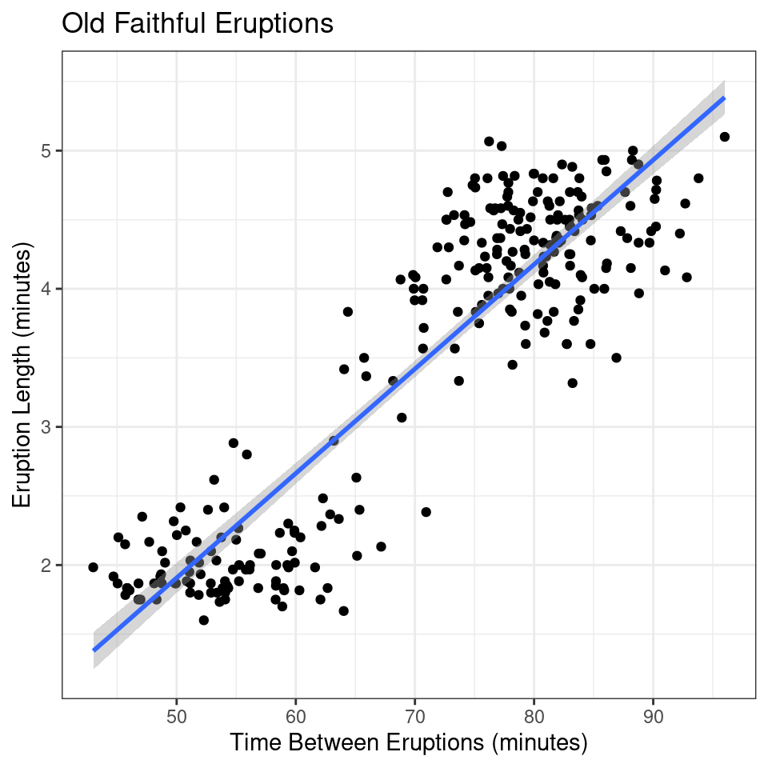
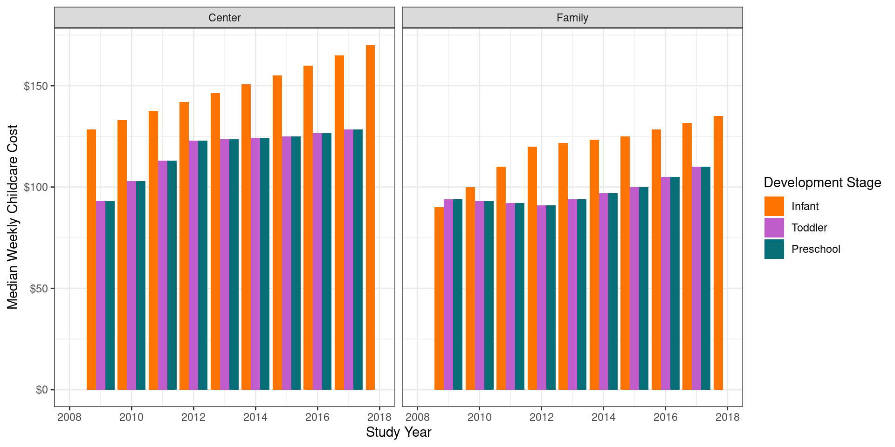

{kind=link}
{kind=link}

Fundamentals of Graphical Communication
Overview: Perception & Cognitive Psych
The Eye

Figure 1: The human eye, with closeup of receptor cells in the retina. Image Source License Authors: OpenStax Copyright Holders: Rice University Publishers: OpenStax OpenStax Biology
Color Vision

Figure 2: Absorption spectra of rods and short (blue), medium (green), and long (red) wave cones. Image modified from Pancrat’s Wikimedia Commons work. License.
The Brain (Hardware)
Signals from the retina are integrated - multiple rods combined together
- Results in optical illusions - Hermann grid, Mach bands
Feature detectors - parts of the brain that recognize lines at specific angles, in spatial arrays
Specialized modules for e.g. face detection
Lots of additional processing – “software”
Selective Attention
Selective Attention
Preattentive features such as color, shape, position, are integrated and applied to single objects through focused attention
Object Perception
Memory & Cognitive Load
Visual Memory – Analog encoding affects recall of image content, relevant to statistical graphics.
Working Memory – Active memory can contain about 7 chunks of information (Miller 1956); therefore, design graphics with \(\le\) 7 categories to match memory capacity.
Information Integration – Effective graphs help the brain integrate information across dimensions by creating “chunks” of information.
Resource Limitations – Human attention is limited; focus on important data aspects.
The Psychology of Charts
Preattentive Perception (Color)

Preattentive Perception (Shape)

Preattentive Perception (Interference)

Preattentive Perception (Dual Encoding)

Concious Perception
- Which parts of the graph are the most useful for answering a question?
- How is information from the graph combined with pre-existing knowledge?
- How does a graph promote understanding of the underlying data?
Task Based Processing
Question: What is the relationship between the length of the eruption and the time between eruptions for Old Faithful?
Source: Ratwani, Trafton, and Boehm-Davis (2008)
- Understand the question
- Search for identified quantities
- Sense-making and Storytelling
- Answer the question
Information Integration
A note about graphical conventions
Image source: Padilla et al. (2018)
Simple Charts
| Rank | Task |
|---|---|
| 1 | Position (common scale) |
| 2 | Position (non-aligned scale) |
| 3 | Length, Direction, Angle, Slope |
| 4 | Area |
| 5 | Volume, Density, Curvature |
| 6 | Shading, Color Saturation, Color Hue |
Sources: Cleveland and McGill (1984); Cleveland and McGill (1985); Cleveland and McGill (1987)
Color, Shape, Discriminability + Other Considerations
- Color provides ordinal and magnitude information, trading off numerical precision for cognitive efficiency.
- Graphical scales must balance working memory demands with feature selection and discriminability.
- Shapes and discriminable letters (H, Q, X) can effectively replace color without reducing accuracy.
- Perceptual studies show that confusable shapes, letters, or colors increase processing time and decrease accuracy.
- Trend lines and axis transformations aid in data interpretation and reduce cognitive load.
- Labeled graphs reduce memory load by minimizing comparisons.
Example – Palmer Penguin Species
Palmer Penguin data collected by species. What is the average number of Adelie and Chinstrap Penguins measured? What steps do you go through to calculate this average?
Image source: Padilla et al (2018), an adaptation of Pinker (1990)
Image source: Padilla et al. (2018)
Example – Palmer Penguin Species
Conclusion: Strategies for Readability
Focus on the most important comparisons, making it as easy as possible to visually process important data features.
For variables where accuracy is important, use \(x\) and \(y\) axes. Show less important variables using other aesthetics - color, shape, size, etc.
As much as possible, reduce cognitive load for your viewers. This can take many forms, including putting labels directly on the chart rather than in a legend.
When looking at a chart, talk through what comparisons you’re making audibly. Then, show a friend the same chart and have them do the same exercise.
You try! Let’s critique and/or redesign a graph…
The Data: Weekly Childcare Costs
Download data and/or read directly from URL at
https://raw.githubusercontent.com/earobinson95/data-for-download/main/richmond-va-childcare.csv
state_abbreviationVAcounty_nameRichmond County onlystudy_year2009 - 2018center_typeFamily / Centerdevelopment_stageInfant / Toddler / Preschoolmedian_weekly_childcare_costin U.S. dollars
Source: https://www.dol.gov/agencies/wb/topics/featured-childcare
The Data: Weekly Childcare Costs
The Research Question
How do historical trends of full-time weekly median price charged for childcare differ between family-based and center-based care in Richmond, VA for each of the development stages?
Ask yourself…
- What are the most important comparisons you want to make?
A (not very good) starting point…
Code
# a pretty bad start
richmond_childcare |>
filter(county_name == "Richmond County") |>
ggplot(aes(x = study_year,
y = median_weekly_childcare_cost,
fill = development_stage
)
) +
geom_bar(stat = "identity",
position = "dodge") +
facet_wrap(~ center_type) +
scale_x_continuous(limits = c(2008, 2018),
breaks = seq(2008, 2018, 2)
) +
scale_y_continuous(labels = scales::dollar) +
scale_fill_manual(values = c("#ff7400", "#c05ccb", "#056e76")) +
labs(x = "Study Year",
y = "Median Weekly Childcare Cost",
fill = "Development Stage") +
theme_bw()
Code
# a slightly better start?
richmond_childcare |>
filter(county_name == "Richmond County") |>
ggplot(aes(x = study_year,
y = median_weekly_childcare_cost,
color = development_stage,
shape = center_type
)
) +
geom_point() +
scale_x_continuous(limits = c(2008, 2018),
breaks = seq(2008, 2018, 2)
) +
scale_y_continuous(labels = scales::dollar) +
scale_color_manual(values = c("#ff7400", "#c05ccb", "#056e76")) +
labs(x = "Study Year",
y = "Median Weekly Childcare Cost",
color = "Development Stage",
shape = "Center Type") +
theme_bw()Code
import pandas as pd
from plotnine import *
import requests
# Read in the data
url = "https://raw.githubusercontent.com/earobinson95/data-for-download/main/richmond-va-childcare.csv"
richmond_childcare = pd.read_csv(url)
# Reorder the development stages
richmond_childcare['development_stage'] = pd.Categorical(
richmond_childcare['development_stage'],
categories=["Infant", "Toddler", "Preschool"],
ordered=True
)
# First plot: Bar plot
p1 = (ggplot(richmond_childcare, aes(x='study_year',
y='median_weekly_childcare_cost',
fill='development_stage')) +
geom_bar(stat='identity', position='dodge') +
facet_wrap('~center_type') +
scale_x_continuous(limits=(2008, 2018), breaks=range(2008, 2019, 2)) +
scale_y_continuous(labels=lambda l: ["${:,.0f}".format(v) for v in l]) +
scale_fill_manual(values=["#ff7400", "#c05ccb", "#056e76"]) +
labs(x="Study Year", y="Median Weekly Childcare Cost", fill="Development Stage") +
theme_bw()
)
print(p1)
# Second plot: Scatter plot
/home/susan/.virtualenvs/r-reticulate/lib/python3.11/site-packages/plotnine/layer.py:364: PlotnineWarning: geom_bar : Removed 4 rows containing missing values.Code
p2 = (ggplot(richmond_childcare, aes(x='study_year',
y='median_weekly_childcare_cost',
color='development_stage',
shape='center_type')) +
geom_point() +
scale_x_continuous(limits=(2008, 2018), breaks=range(2008, 2019, 2)) +
scale_y_continuous(labels=lambda l: ["${:,.0f}".format(v) for v in l]) +
scale_color_manual(values=["#ff7400", "#c05ccb", "#056e76"]) +
labs(x="Study Year", y="Median Weekly Childcare Cost", color="Development Stage", shape = "Center Type") +
theme_bw()
)
print(p2)Share yours!
Upload your redesigned graphic (even if you sketched or critiqued it!) to https://bit.ly/sdss-redesign-the-graphic.
Cleveland, William S., and Robert McGill. 1984. “Graphical Perception: Theory, Experimentation, and Application to the Development of Graphical Methods.” Journal of the American Statistical Association 79 (387): 531–54. https://doi.org/10.1080/01621459.1984.10478080.
———. 1985. “Graphical Perception and Graphical Methods for Analyzing Scientific Data.” Science 229 (4716): 828–33. https://doi.org/10.1126/science.229.4716.828.
———. 1987. “Graphical Perception: The Visual Decoding of Quantitative Information on Graphical Displays of Data.” Journal of the Royal Statistical Society. Series A (General) 150 (3): 192. https://doi.org/10.2307/2981473.
Miller, George A. 1956. “The Magical Number Seven, Plus or Minus Two: Some Limits on Our Capacity for Processing Information.” Psychological Review 63 (2): 81.
Padilla, Lace M., Sarah H. Creem-Regehr, Mary Hegarty, and Jeanine K. Stefanucci. 2018. “Decision Making with Visualizations: A Cognitive Framework Across Disciplines.” Cognitive Research: Principles and Implications 3 (December): 29. https://doi.org/10.1186/s41235-018-0120-9.
Ratwani, Raj M, J Gregory Trafton, and Deborah A Boehm-Davis. 2008. “Thinking Graphically: Connecting Vision and Cognition During Graph Comprehension.” Journal of Experimental Psychology: Applied 14 (1): 36.